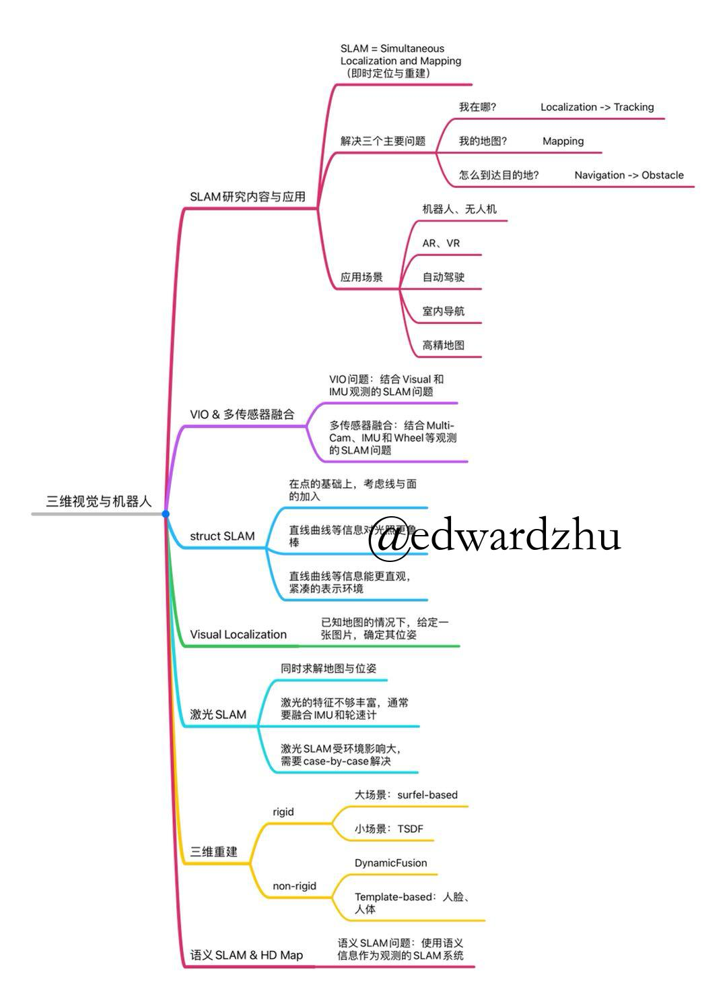

SLAM领域知识结构梳理
三维视觉中的一些基本问题
三维视觉旨在从所见的信息中恢复出三维世界，其中牵涉到相当多的关键技术点，其中SLAM是三维视觉中的一个重要方向，SLAM全称为simultaneous localization and mapping（即时定位与重建），SLAM可以恢复场景的地图信息并告知捕捉设备所处的世界位置，除此之外，还有利用大量互联网图片对场景重建的SfM技术，利用某个场景的密集捕捉图片恢复表面几何的Fusion技术，基于已知相机位姿恢复密集三维结构的Stereo技术等等。
机器人在一个陌生环境中如何运行是SLAM的主要研究内容，大致可以分为三个部分，包括：我在哪（Localization）？我的地图长什么样（Mapping）？以及怎么到达目的地（Navigation）？由于要帮助机器人有效的运动，因此SLAM对于实时性是有要求的，并且一般会利用多传感器给算法提供更多的信息帮助恢复更精准的三维坐标信息并将之用于导航。
SLAM问题描述
经典的SLAM问题由运动方程和观测方程组成：
$$
\begin{equation}
\left\{
\begin{array}{lc}
x_k=f(x_{k-1},u_k)+w_k, \\\
z_{k,j}=h(l_j,x_k)+v_{k,j}
\end{array}
\right.
\end{equation}
$$
$x_k$表示相机姿态，$u_k$表示运动测量，$w_k\sim N(0,R_k)$表示运动噪声；$z_{k,j}$表示路标观测，$l_j$表示路标点，$v_{k,j}\sim N(0,Q_{k,j})$表示观测噪声。
在给定一系列传感器观测：$Z\triangleq\{z_k\}_{k=1}^{K}$，例如相机、激光、IMU、码盘等等。需要估计出：1）姿态（pose）$\mathcal{X}\triangleq\{x_t\}_{t=1}^{T]}$，2）路标（landmark）$\mathcal{L}\triangleq\{l_m\}_{m=1}^{M}$，即几何特征，例如点、线、面等等。通过问题归结后，可以将问题简化为求解后验概率最大（MAP）：
$$
p(\mathcal{X},\mathcal{L}|\mathcal{Z}) = \frac{p(\mathcal{Z|\mathcal{X,L}})p(\mathcal{X,L})}{p(\mathcal{Z})} \propto p(\mathcal{Z}|\mathcal{X,L})p(\mathcal{X,L})
$$
在确定问题后，求解问题的一般过程为：
1）设定参数化方法：$\mathcal{L}\triangleq\{l_m\}_{m=1}^{M}$
2）建立数据关联：$\mathcal{D}\triangleq{ ({\alpha_k},\beta_k )}_{k=1}^{K}$
3）极大似然估计（MLE）：$\hat{\mathcal{X}},\hat{\mathcal{L}}=\arg\max_{\mathcal{X,L}}\log p(\mathcal{Z|X,L,\hat{D}})$
通常观测噪声项符合高斯分布，因此估计又可以转换为一个最小二乘问题（等价于最小化噪声项的平方），求解此类问题一般使用滤波器（EKF）或非线性优化求解。
SLAM应用场景
在知晓了三维世界和机器人所在位置后，便可以利用其指导机器人和无人机的导航，另外对于AR、VR等技术，获取三维世界信息也是必须的，在获取三维表示之后就可以对三维世界进行更高层次的语义补充并在得到的三维世界中加入更多的渲染技术生成更多可玩的应用，对于自动驾驶来说，则需要获取三维信息和其中的物体关系，做到实时定位、避障等等。在高精度地图方面，对于SLAM算法也是非常依赖的，通过SLAM重建点云并获取其中的重要语义信息，对道路相关的应用十分有帮助，定时更新的动态地图可以帮助车辆更好地了解路况信息并提前作出相应的反应。
SLAM中的几种不同技术
SLAM的一个子课题：视觉SLAM
VSLAM利用摄像机在空间中运动采集的图像序列作为输入，输出相机的运动轨迹并同时构建环境地图。其主要求解思路在于利用图像中像素点的对应关系建立误差函数，进行最小二乘优化求解。首先对图片中的特征进行提取并匹配，构建数据关联，提取图像中的测量信息，其次建立估计量和测量量之间的重投影误差函数，最后利用非线性最小二乘求解参数：
$$
T_{k,k-1}=\arg\min_{T}\sum_{i}|u^{\prime}_i -\pi(p_i) |^{2}_{\Sigma}
$$
VIO & 多传感器融合
一般在实际应用中仅靠视觉信息求解SLAM得到的结果是不太可靠的，因此需要结合其他传感器的信息来对测量进行进一步的修正，在这方面有许多工作产生，其中 VIO问题旨解决结合Visual和IMU观测的SLAM问题，其目标方程为：
$$
J(X):=\sum_{i=1}^{I}\sum_{k=1}^{K}\sum_{j\in\mathcal{J}(i,k)}e_r^{i,j,k^T}W_r^{i,j,k}e_r^{i,j,k}+\sum_{k=1}^{K-1}e_s^{k^T}W_s^{k}e_s^k
$$
其中前半部分对应视觉feature的重投影误差，后半部分为IMU预积分残项差。VIO由于其轻量的计算一般可以用在AR尺子、AR游戏等应用上。
更进一步地，在拥有更多传感器的前提下，可以对该问题进行更好的约束，比如结合Multi-Cam、IMU和Wheel等观测的SLAM问题，其目标方程可以formulate为：
$$
J(X):=\sum_{i=1}^{I}\sum_{k=1}^{K}\sum_{j\in\mathcal{J}(i,k)}e_r^{i,j,k^T}W_r^{i,j,k}e_r^{i,j,k}+\sum_{k=1}^{K-1}e_s^{k^T}W_s^{k}e_s^k+\sum_{k=1}^{K-1}e_o^{k^T}W_o^{k}e_o^k+\sum_{k=1}^{K}e_p^{k^T}W_p^{k}e_p^k
$$
其中除去刚刚介绍的visual部分和IMU的inertial部分，又增加了wheel预积分项误差odom部分和平面约束项误差planar部分。多传感器融合的SLAM算法常见于AGV搬运车以及无人驾驶等应用上。以下是一些开源项目的展示：
| 名称 | 标签 | 简介 | 资料 | 地址 |
|---|---|---|---|---|
| SVO 2.0 | VIO | Semi-direct Visual Odometry (SVO) developed at RPG | PDF page | https://github.com/uzh-rpg/rpg_svo_pro_open |
| OpenVINS | VIO | 基于 MSCKF 实现的一整套 VIO 库 | PDF video | https://github.com/rpng/open_vins |
| ORB SLAM3 | VIO | 基于特征点法 ORB SLAM，包含单目、双目VIO、多地图等实现 | https://github.com/UZ-SLAMLab/ORB_SLAM3 | |
| VINS Fusion | VIO | 基于 VINS，支持双目、GPS 等的 VIO 系统 | https://github.com/HKUST-Aerial-Robotics/VINS-Fusion |
Struct SLAM
Struct SLAM是一项比较有意思的研究子课题，其motivation在于充分利用图像中的点、线、面等信息来构建一个更加鲁棒、更高精度的SLAM系统，在光照变化明显的图片序列中，仅使用关键点作为特征提取目标往往会造成大量特征点的丢失，这时候考虑进线甚至是面的信息往往可以对丢失点的信息作补充，且可以达到更紧凑的表示环境效果。
Visual Localization
该任务的目标为在已知地图的情况下，给定一张图片来确定其位姿，常常被用在机器人重定位以及手机室内定位等问题上。但是同时该任务也有其相应的难点，例如光照、视角的变化非常大的情况下对于算法鲁棒性的挑战以及在场景中遇到大范围相似场景时应该如何处理等等。定位流程主要分为两种不同的方式：
- 离线建图：
- 使用SFM构建稀疏点云地图
- 使用Global Feature构建数据库
- 使用乘积量化方法对地图进行压缩
- 在线定位：
- 粗定位：在Global Feature数据库中最近邻搜索，找到若干候选关键帧
- 精定位：将当前帧2D特征与关键帧3D特征相匹配，进而得到RANSAC 3D-2D位姿估计结果
当前一般使用基于深度学习的Global和Local Feature来让系统更加鲁棒，此类特征一般优于传统ORB、SIFT等特征。
激光SLAM
激光SLAM是利用激光雷达对三维世界进行扫描得到的数据重建地图的一项技术，该技术同时求解地图$\mathcal{L}$和位姿$x_{1:k}$。
$$
x_{1:k}^{\ast},\mathcal{L}^{\ast}=\arg \min_{x_{1:k},\mathcal{L}}p(x_{1:k},\mathcal{L}|z_{1:k},u_{1:k-1})
$$
求解激光SLAM问题时，一般先求解位姿，再根据已知位姿建图（Rao-Blackwellization近似）：
$$
p(x_{1:k},\mathcal{L}|z_{1:k},u_{1:k-1})=p(\mathcal{L}|x_{1:k},z_{1:k}):p(x_{1:k}|z_{1:k},u_{1:k-1}) \\\
x_{1:k}^{\ast}=\arg \min_{x_{1:k}}p(x_{1:k}|z_{1:k},u_{1:k-1}) \\\
\mathcal{L}^{\ast} = \arg \min_{\mathcal{L}}p(\mathcal{L}|x_{1:k}^{\ast},z_{1:k-1})
$$
对于地图的表示形式可以有多种，例如栅格地图、点云、TSDF等。在估计位姿时，对于scan-to-scan情况一般使用ICP、NDT等算法，对于scan-to-map情况一般使用CSM（Correlation Scan Match）和优化等多传感器融合：基于粒子滤波和图优化的算法。
对于激光SLAM算法而言，其挑战在于有时候激光的特征不够丰富，因此需要融合更多其他传感器的信息，例如IMU和轮速计等，但是加入多传感器信息的同时也使得问题求解变得更加复杂。另外激光SLAM受环境影响比较大，需要针对不同的环境设计不同的解决方案，目前并没有一套算法是在所有场景下都适用的。
| 名称 | 标签 | 简介 | 资料 | 地址 |
|---|---|---|---|---|
| LOAM | Odometry | 比较早期的 LOAM 实现，基于 Velodyne-16P 激光 | https://github.com/laboshinl/loam_velodyne | |
| A-LOAM | Odometry | 港科大实现的一套基于 ceres 自动求导的 LOAM。相比原版有一些简化但可读性高适合学习 | https://github.com/HKUST-Aerial-Robotics/A-LOAM | |
| FLOAM | Odometry | An optimized version of A-LOAM and LOAM with the computational cost reduced by up to 3 times.比 A-LOAM 速度更快的实现 | https://github.com/wh200720041/floam | |
| BALM | Mapping | BALM is a basic and simple system to use bundle adjustment (BA) in lidar mapping. | https://github.com/hku-mars/BALM |
语义SLAM & HD Map
语义SLAM与其他算法不同的是，该系统采用语义信息作为观测，相较于传统SLAM系统，语义SLAM不容易受光照、天气、动态、遮挡等因素影响具有更高的鲁棒性。
语义信息可以表示为：$s_k=(s_k^c, s_k^s, s_k^b)$（c：类别；s：置信度；b：位置），一般地，语义信息可以参数化为：
- Detection：将检测框中心作为观测，将物体的3D中心点作为物体的参数表示
- Segmentation：将分割结果作为观测，将物体所有3D特征点（稠密/稀疏）作为物体的参数表示
传统的SLAM求解一般是先估计数据关联：$\hat{\mathcal{D}}=\arg\max_{\mathcal{D}}p(\mathcal{D|X^0,L^0,Z})$，然后通过估计的数据关联对位姿和地图进行求解：$\mathcal{\hat{X},\hat{L}}=\arg\max_{\mathcal{X,L}}p(\mathcal{Z|X,L,\hat{D}})$。对于语义SLAM而言，由于其观测是在语义层面进行的，因此使用EM估计完成问题的求解：
首先进行期望测量似然：
$$
\mathbb{E}_{\mathcal{D}}[\log_p(\mathcal{Z|X,L,Z)|X^i, L^I,Z}]
$$
求解问题：
$$
\mathcal{X^{i+1},L^{i+1}}=\arg\max\mathbb{E}_{\mathcal{D}}[\log p(\mathcal{Z|X,L,D)|X^i,L^i,Z}] \
=\arg\max_{\mathcal{X,L}}\sum_{\mathcal{D}\in\mathbb{D}}p(\mathcal{D|X^i,L^i,Z})\log p(\mathcal{Z|X,L,D})
$$
通过Detection作为语义观测，辅助特征点，同时在地图中完成定位，并获得物体的类别和三维坐标，一个车多次被观测，也可以通过SLAM分配唯一的ID，从另一个角度实现了ReID的效果。使用Segmentation作为观测，已知稀疏三维地图的情况下，通过特征点位置和类别，不实用特征点描述子进行定位，可以使地图体积非常小，并且在语义丰富的情况下定位可以达到非常准确（1cm以内）。